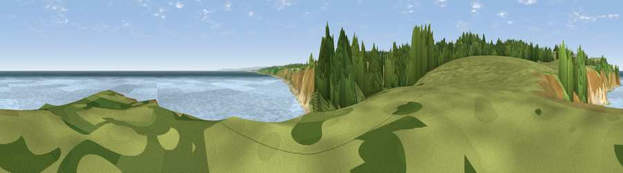

Viewpoint near Easington Colliery
#10979 in England · top 24% of its area beats it · near Easington CollieryWhere it is
The exact computed spot (NZ 44475 43675). Click the marker for map links.
The view, rendered

A 360° render of this exact spot computed from the terrain model, tree cover and land cover — summer colours, afternoon light, calibrated against photographs of famous viewpoints. Real trees, hedges and buildings will differ in detail.
The panorama
Grey silhouette: terrain skyline in each direction (720 bearings, Earth curvature and refraction included). Dashed green: skyline with trees (+15 m) and buildings (+8 m) as obstacles. Blue strip: how far the ground is visible on each bearing.
Where the view opens
Wedge length = distance to the farthest visible ground on that bearing (vegetation-aware). Rings at 10, 25 and 50 km.
What fills the view
66% water · 13% woodland · 13% grassland · 5% bare ground · 2% cropland ·
Angular shares of the visible panorama (visual magnitude), not map area. Landscape diversity 0.46 (0–1 Shannon).
Key numbers
More beautiful places nearby
The staircase of upgrades: each row has a higher view potential than everything closer. Driving times are estimates from straight-line distance, calibrated against real road routing — check an actual route before setting out.
| Place | Direction | Drive | Score |
|---|---|---|---|
| Viewpoint near Easington Colliery | W · 1 km | ~3 min | 69.4 |
| Viewpoint near Easington Colliery | NNW · 2 km | ~5 min | 74.4 |
| Viewpoint near Houghton-le-Spring | NW · 10 km | ~19 min | 76.0 |
| Viewpoint near Sunniside | WNW · 26 km | ~42 min | 77.6 |
| Viewpoint near Lazenby | SSE · 28 km | ~45 min | 86.4 |
| Warsett Hill | SE · 33 km | ~51 min | 86.8 |
| Viewpoint near Easington | SE · 38 km | ~57 min | 90.2 |
| The Knoll | SSW · 465 km | ~432 min | 91.0 |
54.78601, -1.30995 · source: screening · position refined by local search. Computed location — check access rights before visiting.